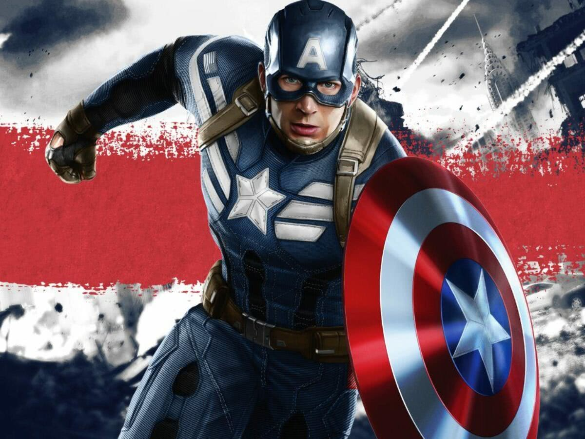
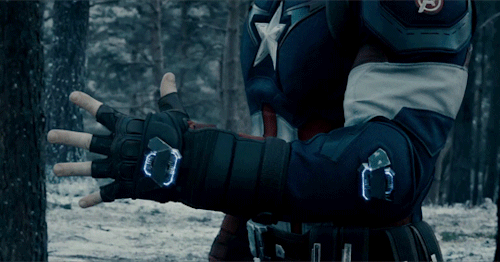

Quem foi o Capitão América?
Steve Rogers, um homem frágil e magro do Brooklyn que alista-se no exército. No entanto, por conta de sua saúde frágil, é rejeitado. É então que aparece o Dr. Erskine, que oferece a Rogers a oportunidade de participar de um projeto experimental para criar um "super soldado".[6] Com a ajuda de um soro especial e de irradiações dos raios "Vita" durante o experimento, Rogers se transforma no super-soldado Capitão América para ajudar durante a guerra. Ele tem a missão de deter o Caveira Vermelha, um auxiliar de armas de Adolf Hitler e líder da Hidra, uma misteriosa organização que pretende usar um dispositivo chamado Tesseract como fonte de energia para dominar mundo.
Capitão América possuía acessórios muito importantes que estavam com ele a todo momento:
Escudo
 